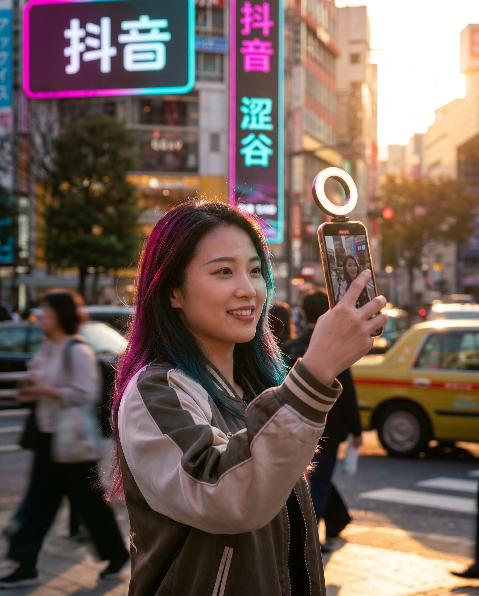
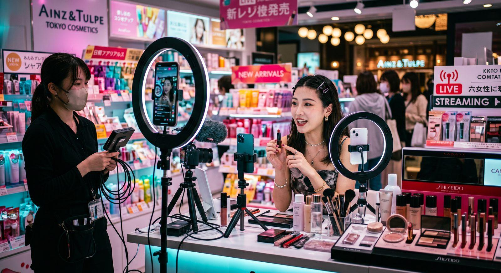
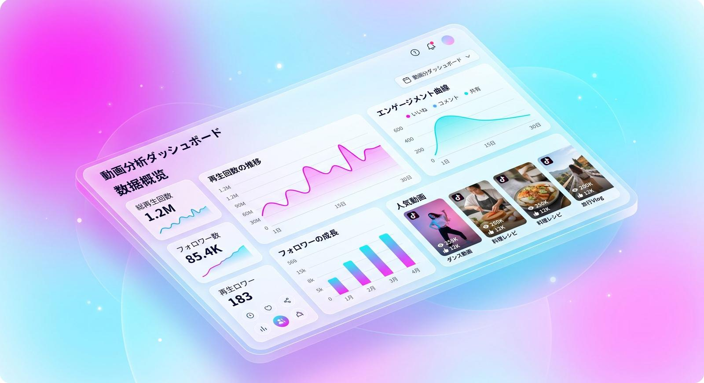

日間アクティブユーザー(DAU)
1日平均利用時間
動画を契機とする購買意欲増
抖音内EC取引年間総額(GMV)
Why Douyin?
抖音は単なる動画アプリではありません。精度の高いレコメンドアルゴリズムを核に、日本の観光地、美容、グルメ情報を「興味を持つ潜在ターゲット」へ直接かつ爆発的に拡散させる最強のメディアです。
Common Challenges
動画を投稿しても全く再生数が伸びない。抖音独自のアルゴリズムや「推薦エンジン」の仕組みが理解できない。
ただ映像を翻訳して出すだけではバズらない。中国ネイティブに深く刺さる言葉のセンス、カット割、BGMの流行が追えない。
台本企画、縦動画のカメラワーク、現地受けするナレーションの手配など、社内だけでは高品質な動画制作体制を回せない。
PROTECHが動画のプロフェッショナルとして課題を完全解決
企画・撮影・ネイティブ編集から運用まで、すべてワンストップでサポート
Our Services
PROTECHの動画専門マーケティングチームが、貴社のアカウントを強力にプロデュースします。
日本企業向けの抖音公式企業認証（ブルーバッジ）のアカウント開設手続きを完全代行。信頼性の担保とブランド構築を初動からサポート。
ネイティブスタッフが現地の最新動画トレンド・BGMを追跡し、貴社の魅力を最大限に伝える動画構成やセリフ・台本を作成。
スマートフォン縦動画に特化した、没入感の高い撮影とエフェクトカット。現地の若者に刺さるテンポの良いネイティブ字幕や音効を追加。
ユーザーの検索キーワードトレンドに連動するキーワード設計。投稿ごとに最もインプレッションを獲得しやすいタグを選択・設計します。
数万〜数百万のフォロワーを持つ動画クリエイターとのコラボ企画。製品紹介や店舗訪問のリアルな動画で爆発的なインプレッションを実現。
動画ごとの完了率（再生維持時間）、コメント率、シェア率を詳細に分析。エンゲージメント改善に向けて動画構成を毎回微調整・アップデート。

Influencer Networks
抖音におけるインバウンド集客で極めて高い効果を発揮するのが、体験発信を得意とする旅行・グルメ・カルチャー系KOLとのアライアンスです。PROTECHは、中国市場で実績のある数多くの有力動画クリエイターと直接連携。貴社の業種や魅力に合致する「最もエンゲージメントの高いインフルエンサー」を戦略的にアサインします。
Case Studies
バズる仕掛けとデータ分析のPDCAによって、ブランド認知拡大から売上直結までをスピーディに達成した実例です。
ターゲット：20代〜30代の訪日旅行者・グルメ層
ネイティブが「シズル感」を極限まで引き立てる縦型調理動画を設計。料理の美しさと調理シーンを30秒で魅力的に編集し配信。

ターゲット：カップル・ラグジュアリー観光旅行層
絶景客室露天風呂と夕食の演出を「体験者視点（POV）」の動画でドキュメンタリー風に切り出し。KOLアサインを同時連動。
FAQ
業種や集客の目的によって異なります。大まかには、コスメや小規模なカフェ、じっくりテキストで調べたい予約・実用情報は「小紅書」が適しています。一方で、体験施設、大迫力のグルメ動画、エンタメ性の高いストーリー発信、一瞬のインパクトで大爆発的なバイラル（拡散）を起こしたい場合は「抖音（Douyin）」が圧倒的に向いています。弊社では両プラットフォームを掛け合わせたクロス展開も推奨・サポートしております。
はい、お持ちの映像素材や写真素材をご提供いただければ、それらを抖音用にリメイク・編集して利用することが可能です。また、素材がない場合や現行のクオリティを上げたい場合は、弊社のディレクターおよび撮影スタッフを派遣して新規に撮影を行うことも可能です（お見積もり要相談）。
必須ではありませんが、取得を強く推奨しています。公式認証を取得することで「企業公式であること」の信頼性をユーザーにアピールでき、検索結果で上位に表示されやすくなるほか、公式ホームページや予約ページへのダイレクトリンク貼付などの商用機能が開放され、コンバージョン効率が大きく向上します。PROTECHでは申請・審査の事務手続きを一貫して完全代行いたします。
基本的には「15秒〜60秒」の範囲のショート動画を標準としています。抖音ではユーザーの離脱防止（視聴完了率）がアルゴリズム上極めて重要なため、無駄のないテンポの良い尺で構成することが成功の鍵となります。